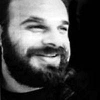

Çok sevgili oğlu Raif’i elim bir trafik kazasında kaybetmek Denktaş’ı yıkmıştı. İçine kapanmış, kendini dine vermiş, bu büyük ıstırabı telafi etmek için kendi iç dünyasında büyük bir mücadele veriyordu. Herkesten kaçıyor, birkaç yakını dışında kimselerle görüşmek istemiyordu. Kolay değil, Raif kaybettiği üçüncü evladı idi.
Diğer bir evladını küçük yaşlarda kaybeden Denktaş, Raif’i en verimli çağında, yani olgunluk dönemine ilerleyen bir yaşta kaybetmişti. Her gün Raif’in kabrine gidip dua ediyordu. İlk günlerde zamanının çoğunu kendini dine adayarak geçiriyor, iç dünyasında bir çıkış yolu arıyordu.
Raif vefat edeli birkaç ay geçmişti. Mayıs ayında, o yıl bilmem kaçıncısını düzenlediğim Uluslararası Girne Konferansı’nı yapmak üzere Kıbrıs’taydım. Her konferansta alışkanlık haline, gelenek haline gelmişti; Denktaş’ı konferanstan bir gün önce ziyaret eder, o yılki konferans hakkında bilgi verirdim. Kıbrıs’taki yakın arkadaşlarım bana, “Bu yıl Başkan açılış yapamaz, zaten hiçbir yere çıkmıyor, içine kapandı gitme,” dediler.

Raif Denktaş
Ben yine de kendisini görmek için Lefkoşe’ye gittim. Raif’in vefatından sonra Başkan ile ilk defa karşılaşıyordum. İçimde bir eziklik ve hüzün vardı. Raif’i ben de tanırdım. İçli dışlı yakın bir ilişkimiz yoktu ama saygılı bir dostluğumuz vardı. Denktaş ile ilk karşılaşmamızın benim için de çok zor olacağını biliyordum. Diğer yandan da Denktaş’ın her şeyden elini ayağını çekerek içine kapanması beni üzüyordu.
Bu karışık duygular içinde başkanlık ikametgâhına gidiyordum. Misafirlerini kabul ettiği odaya girdiğimde bana sıkı sıkıya sarıldı, içini çekerek nefes alıyordu. Belki de Raif’e sarılır gibi bana sarıldı ve uzunca bir süre öyle kaldı. Ben de çok fena olmuştum; kendimi tutmaya çalışmama rağmen gözlerim sulanmıştı. İçimin titrediğini hissettim. Denktaş’ın da gözleri sulanmıştı. Sonra oturduk, bir süre hiç konuşmadan onun yüzüne baktığımı hatırlıyorum.
Söze, “Yine konferans için geldim,” diyerek başladım. Raif’ten hiç söz etmedim, edemedim. Ne diyebilirdim ki? Söylememiz gerekenleri zaten fazlasıyla söylemiştik; Denktaş da ben de.
Oturduğum yerin tam karşısında, duvarda Raif’in koskocaman bir fotoğrafı duruyordu. Sanki o da salondaydı, yanımızdaydı. Bir ara gözüm resme takıldı, uzun bir süre resme bakakaldım. Galiba Denktaş’ın üzüntüsünü paylaşmak, içimde duymak istiyordum. Ben de kendimi bırakmıştım.
Bir iki dakika sonra kendimi toparladım. Denktaş’a içtenlikle yakın biri olarak, aylardır içine kapanmasının doğru olmayacağını, sorumluluklarının bulunduğunu, üzüntüsü sonsuz da olsa bir toplum lideri olarak bu dönemi aşmak zorunda olduğunu söylemek gerektiğine inandım. Bunu önceden düşünmemiştim, o anda içimden geldi ve benim için zor olsa da Denktaş’a söylemem gerektiğini hissettim.
Kelimeler dudaklarımdan dökülüverdi... “Sayın Başkan, siz kendinizi bırakamazsınız, siz bir lidersiniz, toplumunuz için sorumluluklarınız var, güçlü olmanız gerekir,” deyiverdim. Belki de ilk defa böyle bir ifade ile muhatap oluyordu. Biraz duraladı, biraz da irkildi galiba. Ben inanarak ve içimden gelerek konuşmuştum. İçtenlikle söylediğimi hissettiği için olsa gerek olumsuz bir tepki göstermedi. Galiba, “Kendinizi bırakmaya hakkınız da yok,” cümlesini eklemiştim.
Denktaş ertesi günü Uluslararası Girne Konferansı’na geldi ve mutat olduğu üzere açış konuşmasını yaptı. Bu Denktaş’ın, Raif’in vefatından sonra yeniden toplum hayatına ve sorumluluklarına dönüşünün başlangıcı oldu. O en üzüntülü döneminde bile içi yansa da, Kıbrıs davasını savunan bir lider olarak toplumsal sorumluluğunu unutmuyordu.
Daha sonraki dönemlerde, Denktaş’la her kucaklaştığımda Raif’in vefatından sonraki karşılaşmamızdaki duygularımı içimde tekrar tekrar yaşadım. Belki yıllar geçtikçe o ilk sarsılma yoktu ama bir anıdan çok ileride bir duygu, bir irkilme olarak içimde hep hissettim.